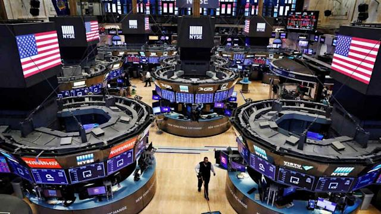
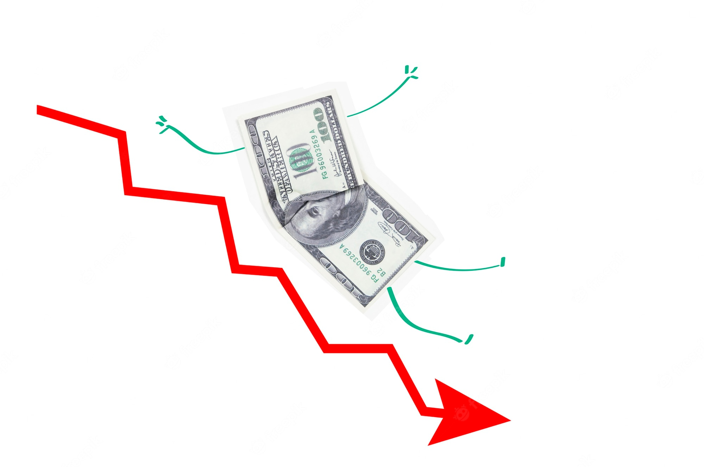

Sabado, 3 de Septiembre de 2022
Dólar BNA
Dólar BLUE
Dólar MEP
Dólar TURISTA
Diario
Codo a Codo
Inicio
Clima
Deportes
Finanzas
Aprendiendo
¿Qué son las finanzas?
Mercados
Wall Street cierra con si primera subida semanal desde mediados de agosto

Aprendiendo
Finanzas personales: Se avecina diciembre...
Mercados
Dólar retrocede mientras los inversores cuadran posiciones tras fuertes ganancias

Aprendiendo
Trading a corto plazo
Criptomercado
¿Se mantendrá el repunte de Bitcoin?
Criptomercado
Las correlaciones son importantes